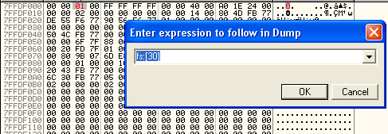

Date de publication : vendredi 30 juin 2006
Auteur : BeatriX
5. Tricks anti-debug.
Je vais faire un listing complet des tricks anti-debugs utilisés dans ce binaire en proposant une source masm32 pour chacun d'eux.
5.1. IsDebuggerPresent
Sans aucun doute, c'est le plus connu de tous les tricks. La fonction kernel32.IsDebuggerPresent renvoie 0 dans eax si le programme n'est pas débuggué. Voici ce que fait réellement cette fonction :
mov eax, dword ptr fs:[18h] mov eax, dword ptr ds:[eax+30h] movzx eax, byte ptr ds:[eax+2] retn
Cette fonction accède au PEB (Process Environment Block). Voici le début de cette structure complexe :
Process Environment Block +000 byte InheritedAddressSpace +001 byte ReadImageFileExecOptions +002 byte BeingDebugged
Pour masquer le debuggueur, il suffit donc au démarrage de placer la valeur 00 sur le 3ème byte du PEB. Sous OllyDebugger, dans la fenêtre de dump, il suffit de taper CTRL+G et de saisir fs:[30h] puis de remplacer le 3ème octet comme ceci :

5.2. Snapshot sur modules
Le programme réalise un snapshot des processus et récupère les noms des modules de chacun de ces processus. Il compare alors ces noms à des noms de modules relatifs aux outils IDA - OllyDbg - WinDbg - SoftIce.
Pour OllyDbg, il recherche les modules suivants : ollydebugger.exe - ollydump.dll - Cmdbar.dll - hideDebugger.dll - IsDebug.dll et loader32.exe.
Pour IDA, il recherche les modules suivants : ida.wll - idag64.exe et ida64.wll.
Pour WinDbg, il recherche les modules suivants : windbg.exe et dbgeng.dll.
Pour SoftIce, il recherche icedat.dll.
Si l'un des modules précédents est repéré, le binaire termine le processus brutalement !
Voici un exemple pour détecter OllyDebugger et le fermer violemment :
.386 .Model Flat ,StdCall option casemap:none include \masm32\include\windows.inc include \masm32\include\kernel32.inc includelib \masm32\lib\kernel32.lib .Data lpNumberOfBytesWritten DWORD 0 Module_IsDebugger BYTE "isdebug.dll",0 hProcessSnap DWORD 0 hModuleSnap DWORD 0 pProcessEntry PROCESSENTRY32 <> pModuleEntry MODULEENTRY32 <> hProcess DWORD 0 .Code Main: push 0 push TH32CS_SNAPPROCESS call CreateToolhelp32Snapshot ; Snapshot of processes mov hProcessSnap, eax mov pProcessEntry.dwSize, SIZEOF PROCESSENTRY32 push offset pProcessEntry push hProcessSnap call Process32First ; Get first process Test_Process: cmp eax, 0 jnz Scan_Process jmp sortie Scan_Process: push pProcessEntry.th32ProcessID push TH32CS_SNAPMODULE call CreateToolhelp32Snapshot ; Snapshot of modules in the current process mov hModuleSnap, eax mov pModuleEntry.dwSize, SIZEOF MODULEENTRY32 push offset pModuleEntry push hModuleSnap call Module32First ; Get first Module Test_Module: cmp eax, 1 jnz Next_Process push offset pModuleEntry.szModule push offset Module_IsDebugger call lstrcmpiA ; compare with "isdebug.dll" test eax, eax jz Olly_Detected NextModule: push offset pModuleEntry push hModuleSnap call Module32Next jmp Test_Module Next_Process: push hModuleSnap call CloseHandle push offset pProcessEntry push hProcessSnap call Process32Next jmp Test_Process sortie: push 0 call ExitProcess ; ************************************ OllyDbg detected ! Olly_Detected: push pProcessEntry.th32ProcessID push 0 push PROCESS_TERMINATE call OpenProcess mov hProcess, eax push hProcess call TerminateProcess push 0 call ExitProcess End Main
5.3. CreateFileA sur drivers
Voici une technique vieille comme le monde qui permet de détecter deux services actifs si SoftIce est lancé : ntice.sys et sice.sys.
.386
.Model Flat ,StdCall
option casemap:none
include \masm32\include\windows.inc
include \masm32\include\kernel32.inc
includelib \masm32\lib\kernel32.lib
include \masm32\include\user32.inc
includelib \masm32\lib\user32.lib
.Data
service BYTE "\\.\NTICE",0
titre BYTE "gloops",0
texte BYTE "Soft Ice détecté !",0
.Code
Main:
push 0
push FILE_ATTRIBUTE_NORMAL
push OPEN_EXISTING
push 0
push FILE_SHARE_READ + FILE_SHARE_WRITE
push GENERIC_READ + GENERIC_WRITE
push offset service
Call CreateFileA
cmp eax, -1
jz @F
push MB_OK + MB_ICONHAND + MB_APPLMODAL ; Soft Ice est détecté
push offset titre
push offset texte
push 0
call MessageBoxA
@@:
push 0
call ExitProcess
End Main
5.4. Contrôles du temps
Le programme utilise également un système très classique qui consiste à évaluer le temps écoulé entre deux relevés. S'il dépasse une certaine valeur seuil, on suppose que le programme est débuggué et on agit en conséquence. Les fonctions utilisées sont GetTickCount, msvcrt.time et GetSystemTime.
Voici un exemple utilisant GetTickCount :
.386
.Model Flat ,StdCall
option casemap:none
include \masm32\include\windows.inc
include \masm32\include\kernel32.inc
includelib \masm32\lib\kernel32.lib
include \masm32\include\user32.inc
includelib \masm32\lib\user32.lib
.Data
titre BYTE "ok",0
texte BYTE "no debugger detected !",0
.Code
Main:
Call GetTickCount
mov ebx, eax
Call GetTickCount
sub ebx,eax
cmp ebx, 1388h
jl @F
push 0
call ExitProcess
@@:
push MB_OK + MB_ICONHAND + MB_APPLMODAL
push offset titre
push offset texte
push 0
call MessageBoxA
push 0
call ExitProcess
End Main
5.5. Code d'auto-restauration
La technique la plus surprenante au premier abord est sans aucun doute l'usage de la fonction WriteProcessmemory pour patcher les routines critiques. Le programme restaure certaines portions de son propre code de façon régulière. Ceci a pour effet de supprimer les BreakPoints posés et je reconnais que ça surprend de prime abord ! L'effet est immédiat : OllyDbg ne breake plus et le programme s'exécute tranquillement. Comme la technique est utilisées conjointement à l'usage de threads, on peut rapidement perdre pied si on ne se méfie pas. Je ne vais pas proposer un code pour cette technique mais voici les étapes :
- 1 - GetCurrentProcessId pour obtenir l'ID du process
- 2 - OpenProcess pour obtenir un handle sur le process
- 3 - WriteProcessMemory
- 4 - CloseHandle pour fermer le handle
Comme je l'ai dit précédemment, si la fonction WriteProcessMemory n'est utilisée que pour la restauration du code, il est très facile de mettre cette technique en échec en plaçant un retn 14 au début de la fonction.
Copyright (C)- FRET (2006)